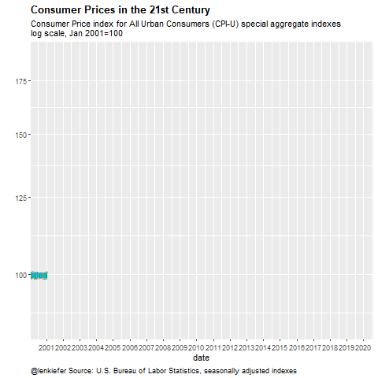

Today I tweeted something that turned out to be pretty popular:
US consumer prices pic.twitter.com/LxIxvEnGFe
— 👻📈 𝙻𝚎𝚗 𝙺𝚒𝚎𝚏𝚎𝚛 😱📊 (@lenkiefer) October 10, 2019
This was an update to a visualization we have talked about here. In this post I want to provide some updated R code to make this visualization taking advantage of the new gganimate api. I’ll also share some code for mortgage rate plots.
The code for the inflation plot is pretty simple. A streamlined version fit into 3 tweets. We’ll embellish a bit here.
Our data will come from the U.S. Bureau of Labor Statistics (BLS.gov) for inflation and the Freddie Mac Primary Mortgage Market Survey from FRED. For the inflation data we can read a flat text file from BLS. For the mortgage rate data we will use the FRED API and fredr.
Inflation Viz
First set libraries we will need
# set libraries
library(tidyverse)
library(lubridate)
library(fredr)
library(cowplot)
library(data.table)
library(gganimate)Get data, wrangle
library(data.table)
dt<-
# data
fread('http://download.bls.gov/pub/time.series/cu/cu.data.2.Summaries') %>%
#series ids
left_join(fread("http://download.bls.gov/pub/time.series/cu/cu.series"), by="series_id") %>%
# series names
left_join(fread("http://download.bls.gov/pub/time.series/cu/cu.item"),by="item_code") %>%
# filter on year
filter(year>2000,area_code=="0000", seasonal=="S") %>%
group_by(series_id)%>%
mutate(y=100*value/value[year==2001 & period=="M01"],
date=as.Date(ISOdate(year,as.numeric(substr(period,2,3)),1) ) ) %>%
ungroup()Make a static plot
ggplot(data=dt,aes(x=date,y=y,color=item_code,label=item_name))+
geom_line()+
geom_text(data=. %>% filter(date==max(date)), hjust=1)+
theme(legend.position="none")+
scale_y_log10(breaks=c(75,100,125,150,175))+
scale_x_date(date_breaks="1 year", date_labels="%Y")+
labs(caption="@lenkiefer Source: U.S. Bureau of Labor Statistics, seasonally adjusted indexes",
title="Consumer Prices in the 21st Century",
subtitle="Consumer Price index for All Urban Consumers (CPI-U) special aggregate indexes\nlog scale, Jan 2001=100",
y="")+
theme(plot.title=element_text(face="bold"),
plot.caption=element_text(hjust=0))
Make an animated plot using gganimate and transition_reveal.
a <-
ggplot(data=dt,aes(x=date,y=y,color=item_code,label=item_name))+
geom_line()+
geom_text(hjust=1)+
theme(legend.position="none")+
scale_y_log10(breaks=c(75,100,125,150,175))+
scale_x_date(date_breaks="1 year", date_labels="%Y")+
labs(caption="@lenkiefer Source: U.S. Bureau of Labor Statistics, seasonally adjusted indexes",
title="Consumer Prices in the 21st Century",
subtitle="Consumer Price index for All Urban Consumers (CPI-U) special aggregate indexes\nlog scale, Jan 2001=100",
y="")+
theme(plot.title=element_text(face="bold"),
plot.caption=element_text(hjust=0))+
transition_reveal(date)
animate(a,end_pause=20)
Mortgage Rate Plot
It is Thursday, which means Freddie Mac releases the Primary Mortgage Market Survey. Each Thursday I like to make a bunch of plots showing trends in mortgage rates for the United States. Follow me on Twitter for new ones.
Here’s on of my favorites.
# get API key here https://research.stlouisfed.org/docs/api/api_key.html
fredr_set_key("YOUR_API_KEY_FROM_FRED")
df <-
fredr(series_id = "MORTGAGE30US",
observation_start = as.Date("1971-04-01")
) %>%
mutate(decade=paste0(floor(year(date)/10),"0s"))%>%
group_by(decade) %>%
# get decade average
mutate(vbar=mean(value)) %>% ungroup()Now to make the plot
myxy2<- function(dd, in.df=df){
x<-filter(in.df,decade==dd)$value
outdf<- data.frame(
x=density(x)$x[which.max(density(x)$y)], #find maximum density (in y dimension)
y=max(density(x)$y,na.rm=T)
)
}
df.text <- data.frame(decade=unique(df$decade)) %>% mutate(xy=map(decade,myxy2)) %>% unnest(xy)
myr0 <- function(x, a=0.02){
geom_ribbon(alpha=a, color=NA, aes(ymin=0,ymax=min(x, value)))
}
myr <- function(x, a=0.02){
geom_ribbon(alpha=a, color=NA, aes(ymin=min(x, value )))
}
# custom color scale using inari colors http://lenkiefer.com/2019/09/23/theme-inari/
inari <- "#fe5305"
cc <- scales::seq_gradient_pal("black",inari)(seq(0,1,length.out=5))
g.dens.plain <-
ggplot(data= df,
aes(x=value, fill=decade,color=decade))+
geom_density(alpha=0.25,color=NA)+
geom_rug(sides="b",alpha=0.25)+
theme_minimal()+
scale_y_continuous(breaks=NULL,sec.axis=dup_axis())+
theme(legend.position="none",
panel.grid.minor=element_blank(),
panel.grid.major=element_blank(),
plot.title=element_text(face="bold",hjust=0),
plot.caption=element_text(hjust=0))+
geom_text(data=df.text,aes(label=decade, x=x,y=y),size=8)+
labs(x="30-year fixed mortgage rate (%)",
title="Estimated density over weekly values",y="",
subtitle="Ticks at bottom weekly observations, dotted line value for Oct 10, 2019")+
scale_colour_manual(values=cc)+
scale_fill_manual(values=cc)+
geom_vline(aes(xintercept=last(value)),linetype=2)
g.line<-
ggplot(data=df ,
aes(x=date,y=value, ymax= value , fill=decade,color=decade))+
geom_line()+
geom_ribbon(alpha=0.5, color=NA, aes(ymin=vbar))+
map(c(0,pull(df,value) %>% last()) %>% pretty(12), myr, a=0.01)+
geom_hline(aes(yintercept=last(value)), linetype=2)+
geom_line(aes(y=vbar),linetype=3)+
geom_line(size=1.05)+
theme_minimal() +
theme(legend.position="none",
plot.caption=element_text(hjust=0))+
scale_x_date(date_breaks="10 years",date_labels="%Y")+
labs(x="date (monthly)",
y="", subtitle="U.S. Weekly Average 30-year fixed mortgage rate April 2, 1971 to October 10, 2019\nLine monthly value, dark shaded area from decade average to monthly value",
title="Mortgage rates over 5 decades",
caption="@lenkiefer Source: Freddie Mac Primary Mortgage Market Survey") +
scale_colour_manual(values=cc)+
scale_fill_manual(values=cc)
cowplot::plot_grid(g.line,g.dens.plain,ncol=1,rel_heights=c(3,2))